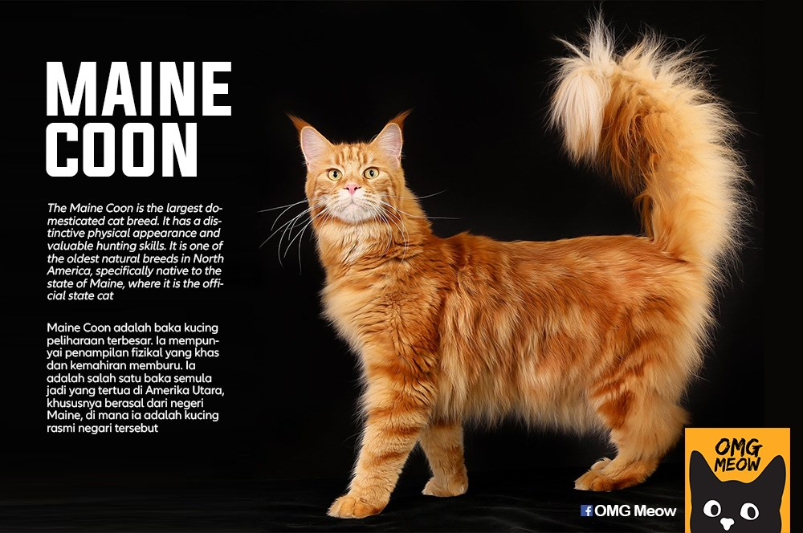

Get to know about cat breeds!

The cat (Felis catus) is a domestic species of small carnivorous mammal. It is the only
domesticated species in the family Felidae and is often referred to as the domestic cat
to distinguish it from the wild members of the family. A cat can either be a house cat,
a farm cat or a feral cat; the latter ranges freely and avoids human contact. Domestic cats are valued
by humans for companionship and their ability to hunt rodents. About 60 cat breeds are
recognized by various cat registries.

